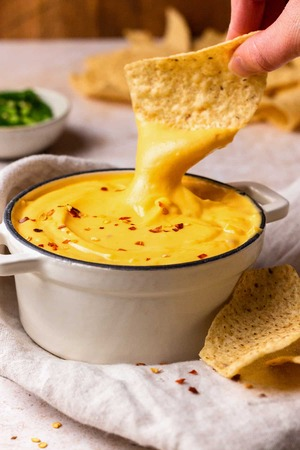

Nacho Cheese Sauce
Nacho Cheese Sauce

This Cheese Sauce its easy and quick to do and it is delicious!
Ingredients
- Shreded Cheese
- Evaporated Milk
- Cornstarch
- (Optioal)Hot Sauce
Step By Step
- Combine all cheese and cornstarch in a saucepan over low heat.
- Then add in the evaporated milk and hot sauce, and whisk constantly until the cheese melts.
- Keep whisking for about 5 minutes, until the cheese sauce gets nice and t h i c c
- Add a little more evaporated milk if the sauce its TOO t h i c c.
- Serve it while its hot with some tortilla chips (honestly i just go with some Dorito's)